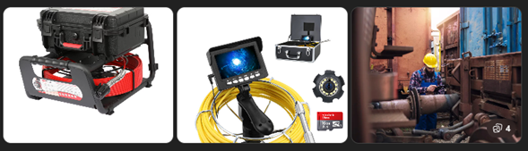

La Inspección Visual Remota (RVI) es una técnica de inspección no destructiva que permite
evaluar el estado interno de equipos, tuberías y componentes industriales
sin necesidad de desmontaje, mediante el uso de cámaras y videoscopios de alta resolución.
📍 Atención a nivel nacional
🕒 Modalidad del servicio:
El servicio de Inspección Visual Remota se presta por horas o por días,
con una modalidad mínima de 2 horas, según el alcance de la inspección,
el equipo a evaluar y las condiciones de acceso.

Equipos y aplicaciones típicas de inspección visual remota en campo industrial.
¿Qué se puede inspeccionar?
Tuberías y líneas de proceso
Recipientes a presión
Intercambiadores de calor
Tanques y válvulas
Componentes de difícil acceso
Defectos detectables
Corrosión interna
Erosión
Obstrucciones
Daños mecánicos
Incrustaciones y depósitos
Solicite su inspección
Contáctenos para evaluar su necesidad de inspección visual remota y recibir
un diagnóstico técnico confiable.